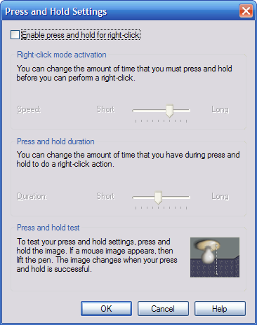

NoteLab and Microsoft
Windows®
The Microsoft Windows
XP Tablet PC Edition and Windows Vista™
operating
systems have a feature called "press and hold" sepcifically designed to
be used with a stylus.
With this feature enabled, if the user
presses the stylus down for a breif period a menu will appear to allow
the user to select certain actions (such as cut, copy, or paste) that
Windows should perform.
Basically the feature lets the user
access "right-click" menus with a stylus without having to use the
special button located on the side of the stylus.
This feature is useful it some situations but destroys the use of the
stylus in note taking applications such as NoteLab.
All note
taking applications designed to be used on the Microsoft Windows®
operating system need to address this problem.
The goal of future versions of NoteLab is to disable this feature only
for NoteLab. That is, "press and hold" will not be available
in NoteLab (which is fine since it does not require the "press and
hold" feature) but will be available in any other application.
The current version, though, cannot do this.
Instead while using NoteLab, the "press and hold" feature
will need to be manually disabled so that NoteLab can run at its
maximum performance. The steps below describe how to disable
the "press and hold" feature.

